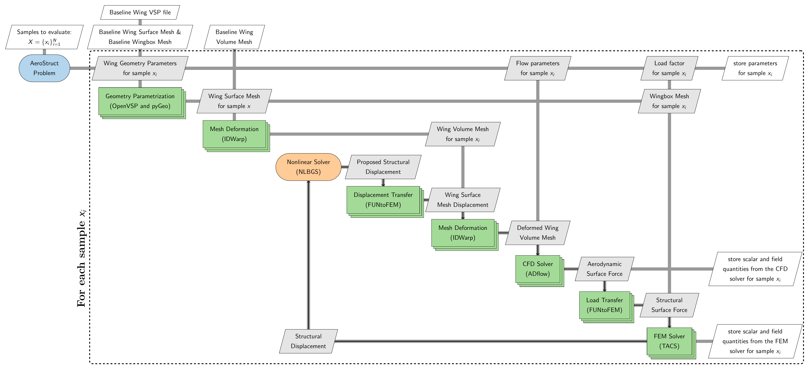

Aerostruct Problem
The Aerostruct problem provides an interface for generating static aerostructural wing datasets using a coupled high-fidelity analysis. Specifically, this problem couples a computational fluid dynamics (CFD) solver with a finite element (FE) solver to perform static aerostructural analysis. The Aerostruct problem currently uses ADflow as the CFD solver, TACS as the FE solver, and OpenVSP for wing shape parameteriation. Users can parameterize wing planform parameters, wing airfoil cross-section, operating conditions, and evaluate the resulting configurations without manually setting up the geometry paramerization, coupled analysis, and post-processing workflow. Additional CFD solvers, such as OpenFOAM and SU2, may be supported in future releases. The following sections describe the dependencies, computational workflow, and how to generate aerostructural datasets with the Aerostruct problem.
Dependencies
The Aerostruct problem requires several additional packages that must be installed before using this problem. The required packages and their corresponding versions are listed below.
Package |
Version |
Comments |
|---|---|---|
3.1.6 |
Used for parallel processing during mesh deformation, CFD, and FE solver execution |
|
- |
Used for monitoring child processes launched for coupled analysis |
|
>= 1.8.4 |
Provides |
|
- |
Handles wing shape paramerization |
|
>= 1.17.0 |
Provides an interface for handling wing shape parameterization through OpenVSP |
|
>= 2.6.2 |
Used for morphing volume mesh based on given shape parameters and during coupled analysis |
|
2.11.0 |
Used as the CFD solver for aerodynamic simulations |
|
3.7.2 |
Used as the FE solver for structural simulations |
|
0.3.7 |
Used for transfering loads and displacement between CFD/FE solvers |
|
1.3.0 |
Used for setting up coupled aerostructural analysis with CFD and FE solver |
|
- |
Used for reading, processing, and writing surface and volume field data |
|
- |
Used for creating and storing field results in HDF5 format |
Make sure that all required packages are installed with compatible versions before using the Aerostruct problem.
Workflow
The Aerostruct problem accepts a set of samples, where each sample contains parameter values. This set may contain a single sample or multiple samples. For each sample \(x_i\) in the sample set, the Aerostruct problem performs the sequence of operations described below:
Wing shape parameterization: Geometry parameters are used to define the wing planform shape and airfoil cross-section through
OpenVSPandpyGeo. Based on the geometry parameters, baseline CFD surface mesh coordinates and baseline wingbox FE mesh are deformed.Volume Mesh deformation: The baseline CFD volume mesh is deformed based on the updated surface mesh coordinates using
idwarp.Coupled analysis: A coupled analysis is then performed using the updated CFD volume mesh and the wingbox FE mesh, along with flow parameters and load factor.
Output extraction: Scalar and field quantities from the converged solver results are extracted and stored in a folder.
When multiple samples are provided, the workflow is evaluated for each sample, and the resulting outputs are stored separately for each sample. This allows the Aerostruct problem to provide a consistent interface for generating datasets without requiring users to manually manage geometry processing, mesh deformation, coupled solver execution, or output handling.
The complete workflow is illustrated in the XDSM diagram below.


The stacked rectangles representing various blocks such as shape paramerization, volume mesh deformation, CFD, and FE analysis indicate that these operations use multiple processors through MPI. The Aerostruct problem therefore abstracts geometry processing, mesh deformation, coupled-solver execution, and output handling required for each sample.
Basic usage
Setting up Aerostruct problem and generating dataset is very similar to Wing problem. It is recommended that you go through Wing problem basic usage section before moving forward. To use the Aerostruct problem, you will require following items:
Baseline volume CFD mesh in CGNS format
Baseline wingbox FE mesh in BDF format
OpenVSP model for the baseline wing (only required if wing shape will be parametrized)
Make sure that the CFD and FE mesh work with corresponding solvers before using it with Aerostruct problem. The requirements for the OpenVSP file are provided here. The files used in the example demonstrated below are available in the examples/wing_aerostruct_vsp directory.
Defining flow and wing geometry parameters
The flow and wing geometry parameters are defined in a similar manner as it is done for Wing problem:
Flow parameters: create an
AeroProblemobject and add flow parametersWing geometry parameters : create
WingVSPobject and add wing geometry parameters
Note
Load factor can be added as a parameter while initializing the Aerostruct problem
Following code snippet illustrates how to define flow and wing geometry parameters:
import numpy as np
from baseclasses import AeroProblem
from blackbox.wing_problem import WingVSP
# create aero problem object
aero_problem = AeroProblem(name="wing", alpha=2.5, mach=0.85, altitude=10000, areaRef=45.5, chordRef=3.56)
# add parameters
aero_problem.addDV(key="mach", lower=0.75, upper=0.8)
aero_problem.addDV(key="alpha", lower=1, upper=4)
aero_problem.addDV(key="altitude", lower=8000, upper=12000)
# create wing vsp object
wing_vsp = WingVSP("wing.vsp3")
# add wing planform variables
wing_vsp.add_shape_parameter(name="Dihedral", lower=0.0, upper=5.0, sections=[1])
wing_vsp.add_shape_parameter(name="Sweep", lower=25.0, upper=35.0, sections=[1])
wing_vsp.add_shape_parameter(name="Span", lower=12.0, upper=16.0, sections=[1])
wing_vsp.add_shape_parameter(name="Twist", lower=-5.0, upper=0.0, sections=[1])
# cst coefficients
upper_cst_coeff = np.array([0.12344046, 0.14809657, 0.14858145, 0.2168004, 0.17607825, 0.21018404])
lower_cst_coeff = np.array([-0.13198943, -0.11895939, -0.22056435, -0.12743513, -0.08232715, 0.05055414])
# add airfoil upper surface cst coefficients
wing_vsp.add_airfoil_cst_parameters(
"upper",
upper_cst_coeff - np.sign(upper_cst_coeff)*0.3*upper_cst_coeff,
upper_cst_coeff + np.sign(upper_cst_coeff)*0.3*upper_cst_coeff,
sections=[0,1]
)
# add airfoil lower surface cst coefficients
wing_vsp.add_airfoil_cst_parameters(
"lower",
lower_cst_coeff - np.sign(lower_cst_coeff)*0.3*lower_cst_coeff,
lower_cst_coeff + np.sign(lower_cst_coeff)*0.3*lower_cst_coeff,
sections=[0,1]
)
Initializing the problem
Next step is to initialize the WingAeroStructOptions class by setting appropraite options. There are several options that can be provided while creating the options class, refer to complete options list for all available options. Most of the options are optional, except the aero_mesh_file, aero_solver_options, aero_problem, and struct_mesh_file are mandatory options. The initialized options object is used to create the main WingADFflowVSP problem object. Following code snippet illustrates how to initialize the WingAeroStructVSP problem class:
from blackbox.aerostruct_problem import WingAeroStructOptions, WingAeroStructVSP
aero_solver_options = {
# Common Parameters
"monitorvariables": ["cl", "cd", "yplus"],
# Physics Parameters
"equationType": "RANS",
"smoother": "DADI",
"MGCycle": "sg",
"nsubiterturb": 10,
"nCycles": 7000,
"liftIndex": 3,
# ANK Solver Parameters
"useANKSolver": True,
"ANKSubspaceSize": 400,
"ANKASMOverlap": 3,
"ANKPCILUFill": 4,
"ANKJacobianLag": 5,
"ANKOuterPreconIts": 3,
"ANKInnerPreconIts": 3,
# Termination Criteria
"L2Convergence": 1e-8
}
options = WingAeroStructOptions(
wing_vsp=wing_vsp,
aero_mesh_file="wing_vol_mesh.cgns",
aero_solver_options=aero_solver_options,
aero_problem=aero_problem,
struct_mesh_file="wingbox.bdf",
load_factor_parameter=True,
load_factor_lb=0.8,
load_factor_ub=1.2,
write_surface_output=True,
write_volume_output=True,
num_processors=10,
write_vsp_file=True,
write_stl_file=True,
write_slice_file=True,
write_lift_distribution=True
)
wing_aerostruct = WingAeroStructVSP(options=options)
Note that the load factor is added as a parameter by setting load_factor_parameter to True. You can also set its lower and upper bound using load_factor_lb and load_factor_ub, respectively.
Evaluating samples
After defining the problem, evaluating samples is straightforward. Following code snippet illustrates how to evaluate a set of samples:
from pyDOE3 import lhs
# generate sampling plan for evaluation
samples = lhs(n=wing_aerostruct.bounds[0].shape[0], samples=10, criterion="cm", iterations=100)
samples = wing_aerostruct.bounds[0] + (wing_aerostruct.bounds[1] - wing_aerostruct.bounds[0]) * samples
wing_aerostruct(samples, return_results=False)
Firstly, 10 samples are generated using a Latin hypercube sampling (LHS) method within a unit hypercube. You can use any sampling method of your choice to generate samples. These samples are then scaled to appropriate bounds for the problem. The bounds can be accessed through the bounds property of the initialized problem object. This property is a tuple containing two 1D numpy arrays: first array contains the lower bounds and the second array contains the upper bounds.
In the code snippet above, samples is a numpy array with shape (10, 20). The 10 represents the number of samples, while 20 represents the number of parameters. Each row in samples array corresponds to a different sample, i.e., a different set of parameter values. The order of the values in each row is determined by the order in which the parameters were added to the problem.
For example, in this case, the first three entries correspond to flow parameters. The next four entries are for wing planform parameters. The next twelve entries correspond to cross-section airfoil CST parameters, and the remaining entry corresponds to load factor. Note that, in aerostruct problem, flow parameters will always preceed shape parameters, while the load factor will always be the last parameter, if added as a parameter.
The initialized Aerostruct problem object (wing_aerostruct in this case) can then be called with the samples to be evaluated. The __call__ method accepts two arguments:
x (numpy array): an array of shape (N,D) or (D,) representing the samples to be evaluated. Here,Ndenotes the number of samples andDdenotes the number of parametersreturn_results (bool): a flag indicating whether the results should be returned by the function (default =False). Set this toTruewhen the results are needed directly in Python, such as during active learning. Whenreturn_resultsisFalse, the requested outputs from each simulation are stored in the corresponding sample directory.
Once the dataset generation process starts, a directory with the name specified by the directory option is created. All generated data is stored within this directory. The directory structure is organized as follows:
The main directory contains a
description.txtfile that provides information about the generated dataset, including the parameters and their bounds.A separate subdirectory is created for each evaluated sample. The subdirectories are numbered sequentially starting from
1(i.e.,1,2,3, and so on), with each number corresponding to the row of the samples array that was evaluated. For example, the directory1contains the results forsamples[0],2contains the results forsamples[1], and so on.Each sample directory contains the files generated during the simulation. Depending on the options provided during initializating
WingAeroStructOptionsclass, the following files may be present:log.txt: a log file containing messages generated during mesh deformation and solver executionparameters.json: a JSON file containing the parameter values used for the samplescalar_outputs.json: a JSON file containing the scalar outputs specified by thescalar_outputsoption.surface_solution.cgns: the surface solution written by the CFD solver. This file is stored only whenwrite_surface_outputis set toTruevolume_solution.cgns: the volume solution written by the CFD solver. This file is stored only whenwrite_volume_outputis set toTruestructural_solution.f5: the structural solution written by the FE solver. This file is stored only whenwrite_structural_outputis set toTruesurface_outputs.hdf5: field data extracted from the surface solution and stored in an HDF5 file. This file is stored only whenwrite_surface_outputis set toTrue. It will contain entities provided in thesurface_outputsoptionvolume_outputs.hdf5: field data extracted from the volume solution and stored in an HDF5 file. This file is stored only whenwrite_volume_outputis set toTrue. It will contain entities provided in thevolume_outputsoptionstructural_solution.vtu: structural data extracted from thef5file and stored invtuformat. This file is stored only whenwrite_structural_outputis set toTrue.lift_distribution.dat: a dat file containing lift distribution along the wing span, this file is written only whenwrite_lift_distributionis set toTrueslices.dat: a dat file containing flow quantities along wing cross-section at different locations (from root till tip), this file is stored only whenwrite_slice_fileis set toTrueupdated_model.vsp3: an OpenVSP file containing updated wing model, this file is stored only whenwrite_vsp_fileis set toTrueupdated_model.stl: a stl file describing the updated wing model, this file is stored only whenwrite_stl_fileis set toTrue
Options
Following is the exhaustive list of options that can be set by the user for the AeroStruct problem: